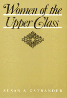

<body bgcolor="#FFFFFF" text="#000000" link="#0000FF" vlink="#CC0000" alink="#CC0000"><center><hr width="350" size="1" align="center" noshade>Although these women are economically and socially powerful, they are for the most part unliberated<hr width="350" size="1" align="center" noshade><p><a href="https://cdcshoppingcart.uchicago.edu/Cart/ChicagoBook.aspx?ISBN=9780877223344&&PRESS=temple" target="_top">Buy this book!</a> | <a href="https://cdcshoppingcart.uchicago.edu/Cart/Cart.aspx?PRESS=temple" target="_top">View Cart</a> | <a href="https://cdcshoppingcart.uchicago.edu/Cart/Cart.aspx?PRESS=temple" target="_top">Check Out</a></p><p></p></center><!--none//--><h1>Women of the Upper Class</h1>
<h3>Susan A. Ostrander</h3>
<P>cloth 0-87722-334-3 $24.95, Mar 84, <FONT COLOR=#990033>Out of Print</FONT>
<br>paper 0-87722-475-7 $30.95, <FONT COLOR=#990033>Available</FONT>
<br>Electronic Book 1-43990-537-1 $30.95 <FONT COLOR=#990033>Out of Print</FONT>
<BR></P><BLOCKQUOTE><I>"This book, which steers clear of the society page report and the scandal sheet, is especially welcome. It gives us an objective picture of the kinds of lives upper-class women live, allowing us to see what the 'political economy' looks like from their unique perch and what their part is in maintaining it. A good corrective to the media image of upper-class women."</I>
<br>&#151<b>Jessie Bernard</b><I></I></BLOCKQUOTE>
<p>In a unique departure from the usual stereotypes, Susan Ostrander gained access to this elite community and interviewed the women in one U.S. region to study their roles, activities, and self-images. Among her conclusions, Ostrander shows that although these women are economically and socially powerful, they are for the most part, unliberated, being subservient to their husbands and to their duty to bear and raise children.
<BR>&nbsp;<h2>Excerpt</h2><P>Excerpt available at <a href="http://www.temple.edu/tempress">www.temple.edu/tempress</a></p>
<BR>&nbsp;<h2>Reviews</h2>
<p><I>"As the first research based on systematic in-depth interviews with upper-class women, Ostrander's study offers us a rich and nuanced view of how these women understand their role in public life, their class position, their hopes and fears for their children, and their points of conflict with and accommodation to their husbands."</I>
<br>&#151<b><I>Contemporary Sociology</I></b>
<p><I>"A major contribution to our understanding of both gender and class power."</I>
<br>&#151<b>G. William Domhoff</b>, University of California
<p><I>"</I>Women of the Upper Class<I> is readable. Ostrander has a good sense of narrative, an accurate eye for detail, and a well-tuned ear for speech. She makes her arguments unobtrusively and, whenever possible, lets the women speak for themselves."</I>
<br>&#151<b>Mary Ellen S. Capek</b>, <I>The Women�s Review of Books</I>
<BR>&nbsp;<h2>Contents</h2><P>
<p>Acknowledgements
<br>1. Introduction: the Upper-Class Woman
<br>2. The Meaning of Upper Class
<br>3. Wife
<br>4. Mother
<br>5. Club Member
<br>6. Community volunteer
<br>7. Tensions and Contradictions
<br>Appendix A: Description of Sample
<br>Appendix B: Interview Guides
<br>Notes
<br>Bibliography
</P><BR>&nbsp;<H2>About the Author(s)</H2>
<P><b>Susan A. Ostrander</b> is Professor of Sociology at Tufts University.</P>
<BR><H2>Subject Categories</H2>
<p><A HREF="/tempress/women.html" TARGET="_top">Women's Studies</a>
</p>
<BR><h2 class="inpageheading">In the series</H2>
<P><I><a href="http://www.temple.edu/tempress/women_political.html" onMouseOver="window.status='Click for other books in this series!'; return true;" onMouseOut="window.status=''; return true;" target="_top">Women in the Political Economy</a></i>, edited by Ronnie J. Steinberg.
</p><p>No longer active.<p><i>Women in the Political Economy</i>, edited by Ronnie J. Steinberg, includes books on women and issues of work, family, social movements, politics, feminism, and empowerment. It emphasizes women's roles in society and the social construction of gender and also explores current policy issues like comparable worth, international development, job training, and parental leave.</p>
<p align="center"><a href="https://cdcshoppingcart.uchicago.edu/Cart/ChicagoBook.aspx?ISBN=9780877223344&&PRESS=temple" target="_top">Buy this book!</a> | <a href="https://cdcshoppingcart.uchicago.edu/Cart/Cart.aspx?PRESS=temple" target="_top">View Cart</a> | <a href="https://cdcshoppingcart.uchicago.edu/Cart/Cart.aspx?PRESS=temple" target="_top">Check Out</a></p><p><font face="Arial" size="1"><a href="copyright.html" onMouseOver="window.status='Web Copyright Policy';return true;" onMouseOut="window.status=''" title="Web Copyright Policy">&copy;</a> 2015 <a href="http://www.temple.edu" target="new" onMouseOver="window.status='Link to Temple University home page';return true;" onMouseOut="window.status=''" title="Link to Temple University home page">Temple University</a>. All Rights Reserved. http://www.temple.edu/tempress/titles/319_reg.html</font></p>